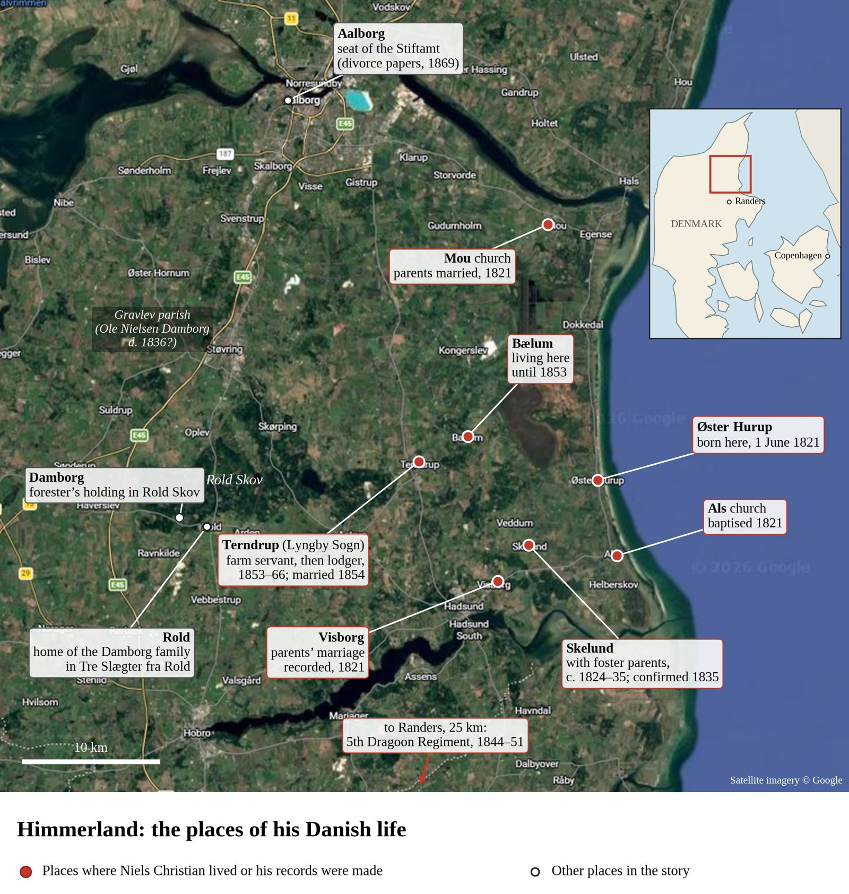
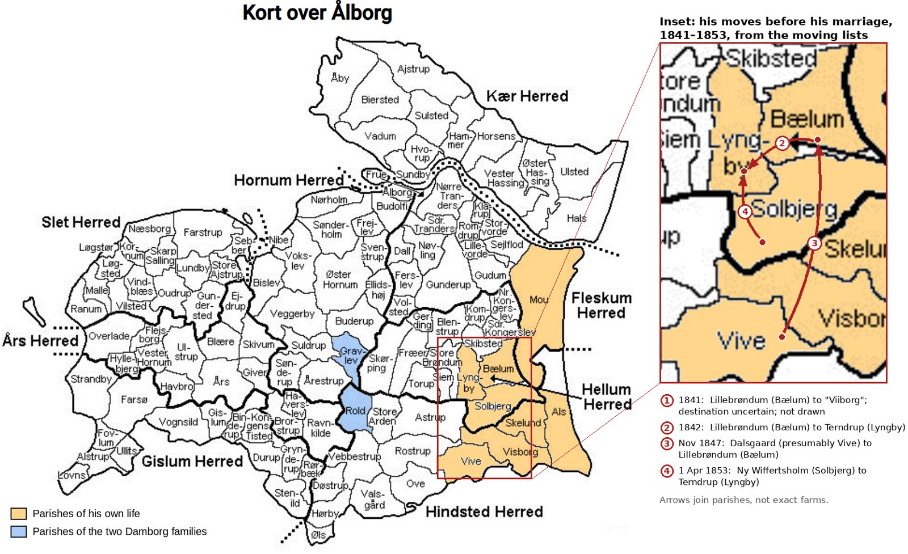

Two Names, Two Countries
Contents
Maps
Himmerland and its parishes

Map 1. The dates and places in Niels Christian's life in Denmark. Satellite imagery © Google; places and dates added for this biography.

Map 2. The parishes (sogne) and districts (herreder) of Aalborg Amt. The base map is unsourced; the moves in the inset are from the moving lists cited in chapter 2.
Previous
Foreword
Next
Introduction
Close
Close